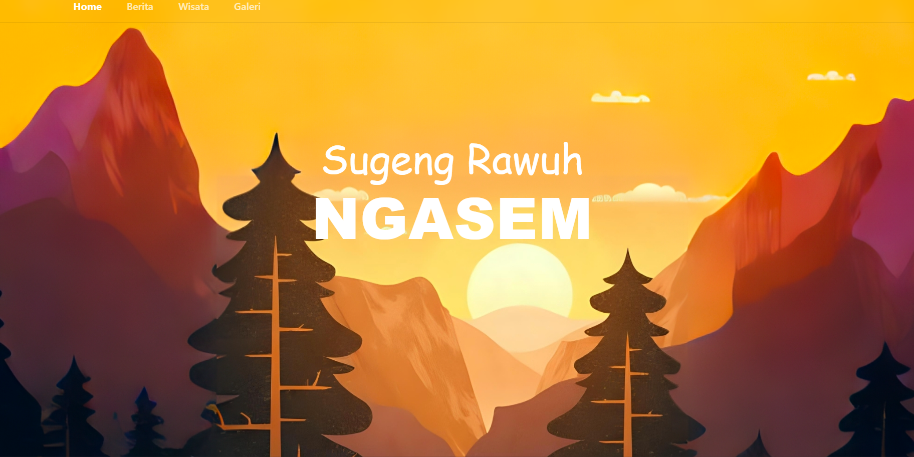

PADUKUHAN NGASEM PORTAL PROFILE SYSTEM
A responsive single-page profile website for Padukuhan Ngasem built to digitalize and centralize local hamlet information. Handled end-to-end as the sole developer, the platform features curated sections for village updates, tourism potential, and a media gallery, establishing a functional digital identity to increase public exposure and engagement. News and gallery content is stored in Firestore and managed through a login-protected admin page, with images hosted on Cloudinary.
PROBLEM: Padukuhan Ngasem lacked an accessible online presence, leaving local news, village updates, and tourism potential uncentralized and offline, which restricted the hamlet's public visibility to outside visitors and potential tourists.
RESULT: Single-handedly designed and developed a clean, fully responsive digital profile from scratch, successfully establishing the hamlet's online presence and providing a centralized portal to promote local tourism and village information.